Data visualization
OMEGA-Py comes with a series of visualization functions specifically developed.
All of them are packed in omegapy.omega_plots,
the user can choose to project the data on a lat/lon grid or a polar view, or
display the image without projection.
In the following, we assume that we have already loaded the module and a corrected OMEGA observation as follows:
import omegapy.omega_data as od
import omegapy.omega_plots as op
omega = od.autoload_omega('0979_3', therm_corr=True, atm_corr=True)
Unprojected data
The first way to display OMEGA data is to show one slice of the cube using matplotlib.pyplot.imshow. The figure axes are here the X, Y axes of the data cube, in pixels, without considering the geometry.
This is done by calling the show_omega
function, which requires an OMEGAdata object
and a given wavelength (in μm).
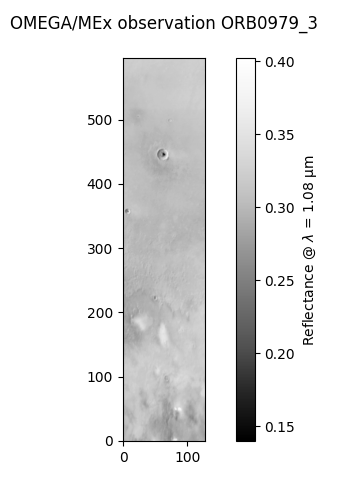
Data projection
The other way to display an OMEGA observation is to use the geometry information for each pixel to project the image on a longitude/latitude grid. Here we use the coordinates of the corners of the OMEGA pixels to plot the image with matplotlib.pyplot.pcolormesh.
The advantage of this visualization is that it gives a direct access to the geographic coordinates of the observed features, and it render the actual shape of the OMEGA pixels, instead of assuming that they are all squares with the same size.
This is done by all the *_v2 functions of omega_plots.
Equatorial projection
The display of an OMEGA observation on a regular equatorial longitude/latitude
grid can be obtain by using the show_omega_v2 function.
Similarly to show_omega,
all it needs is an OMEGAdata object
and a wavelength (in μm).
Info
Several other parameters to customize the plot are available, see the API documentation of the function.
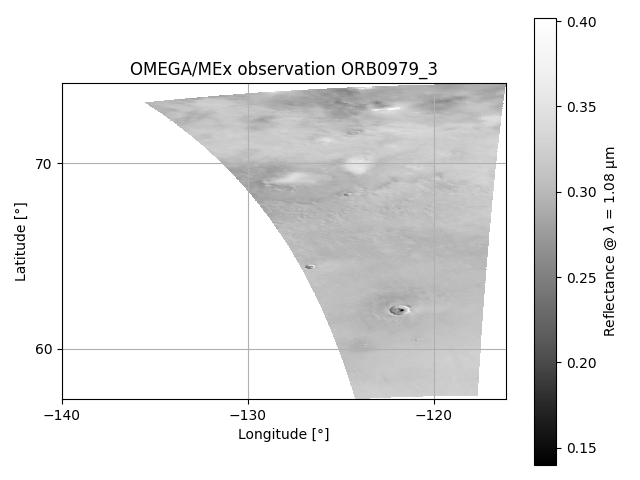
Longitude range
Two options are possible to display the longitudes and can be selected
with the negatives_longitudes argument (valid for all functions
that use equatorial projection, including composite maps):
negatives_longitudes = False→ Longitudes between 0°E and 360°Enegatives_longitudes = True→ Longitudes between -180°E and 180°E
By default, it will pick the one that seems the most adapted to the min/max longitudes of the observation. Especially in order to avoid splitting it on both edges of the figure.
Polar projection
For observations that are located at high latitudes, close to the poles, it may
be preferred to use a polar projection for the axes instead of an equatorial projection.
This can be done simply by adding polar=True in the call of the function.
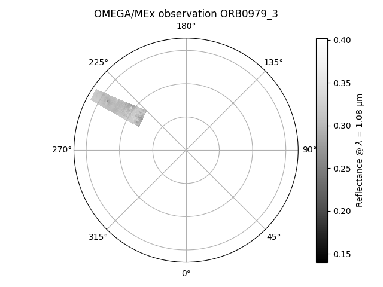
Selecting the pole
By default, the function will automatically select the hemisphere and latitude
range to have the best rendering of the observation.
But the hemisphere can also be selected manually but setting the latitude bounds
of the figure with the latlim argument:
latlim = (90, 0)for the entire North hemispherelatlim = (-90, 0)for the entire South hemisphere
V-channel geometry
The field of view of the V-channel is not perfectly co-aligned with the C & L-channels,
so the geometry information (longitude, latitude, etc) is slightly different depending
on the selected wavelength.
The default behaviour of OMEGA-Py is to use the C/L-channels geometry, but all the
data for the V-channel are available as well (e.g., lat_v, lon_v, ...).
So, if you are displaying data from the V-channel (i.e., λ < 1 μm), it is possible
to use the appropriate geometry information by setting the use_V_geom parameter
to True (this option is available in all the display functions that use projection,
i.e., all the *_v2 functions).
Applying masks
Let's assume you have generated a mask associated with your OMEGA observation,
stored in the data_mask array,
and you want to hide the flagged pixels while displaying the data.
data_mask = od.omega_mask(
omega,
hide_128=True,
emer_lim=10,
inci_lim=70,
tempc_lim=-194,
limsat_c=500
)
This is simply done by passing the data_mask array to the mask
parameter of the show_omega_v2
function:
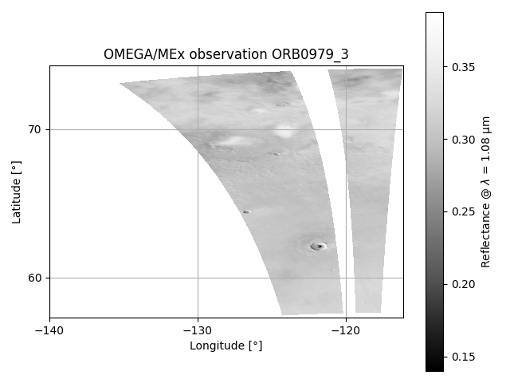
Same example with polar viewing:
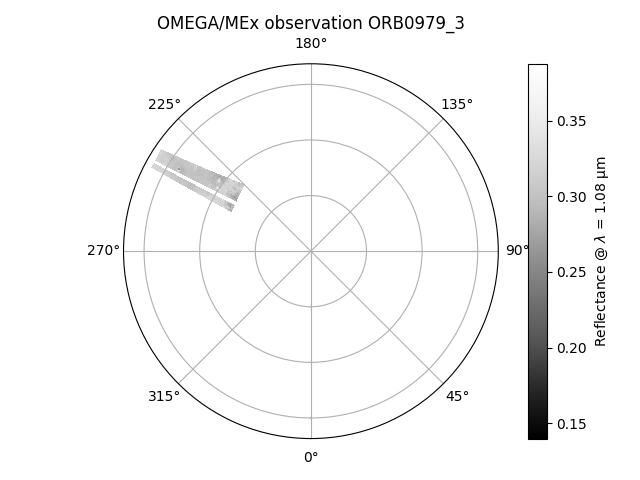
Reflectance vs previously computed data
It is possible to replace the reflectance by any data array derived from the OMEGA observation (assuming the X,Y dimensions remains identical), to show for instance the spatial variations of a spectral criterion (e.g., example 1 – Band depth).
This is done by using the show_data_v2
function, which is very similar to show_omega_v2
except that instead of requiring a wavelength (lam) it uses an array of floats that
will replace the reflectance values (data).
Colorbar
Unlike the case of the reflectance, here the function cannot know by itself the
nature of the data that you are plotting.
Thus, you need to define the title of the colorbar with the cb_title argument
(otherwise it will be set to 'data' by default).
It is also possible to deactivate the display of the colorbar with cbar=False,
which may be useful when plotting multiple maps on the same figure
(i.e., see example 2 – Overplotting).
Here we assume that we have computed the 3μm IBD defined in Jouglet et al. (2007)1
(also referred as "Wide 3μm BD" in Stcherbinine et al. (2021)2) for the cube
ORB0979_3, and stored it in the array ibd30.
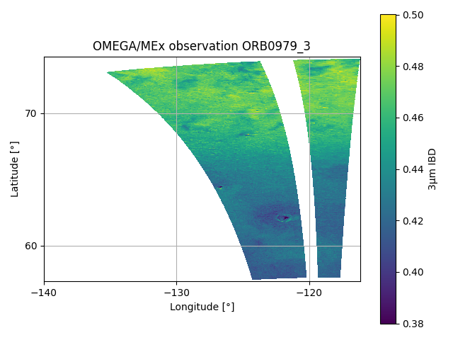
Same example with polar viewing:
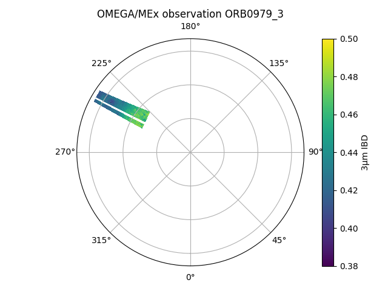
Interactive visualization
One of the very useful features for the exploration of OMEGA data is the interactive display, similar to what can be done with ENVI for IDL users. By clicking with the mouse on the OMEGA image (reflectance or derived map), the user can explore and extract the spectra from every pixel of the map.
Plus, by holding the Ctrl key while clicking on the map, it is possible to select multiple spectra.
Important note for the interactive visualization
Using the interactive function requires to have the figure displayed in an external window. So if you are using Jupyter or an IDE like Spyder, make sure to configure matplotlib for that.
For instance, assuming you've already installed a Qt binding, e.g., with:
you can activate it with (put this line at the beginning of your Jupyter notebook, or in your IDE console)Additional point if using a Google Colab notebook
It seems that Google Colab notebooks are blocking non inline backends diplay, so you cannot
enable the Qt backend as described above.
One workaround is to install and use the ipympl backend with:
Install ipympl
And allow third-party Jupyter
widgets as described here by putting these lines at the beginning of your notebook (instead of %matplotlib qt):
This is done by calling the show_omega_interactif_v2
function, which requires an OMEGAdata object
and either a wavelength (lam, in μm) or a data array to display (data):
Info
If data is provided,
show_data_v2 will be used
to display the map, otherwise it will be
show_omega_v2.
So other customization arguments of these functions can be used here.
op.show_omega_interactif_v2(
omega,
lam = 2.26,
mask = data_mask,
vmin = 0,
vmax = 0.5,
data = None, # Can be used to replace the reflectance by an other pre-computed map
)
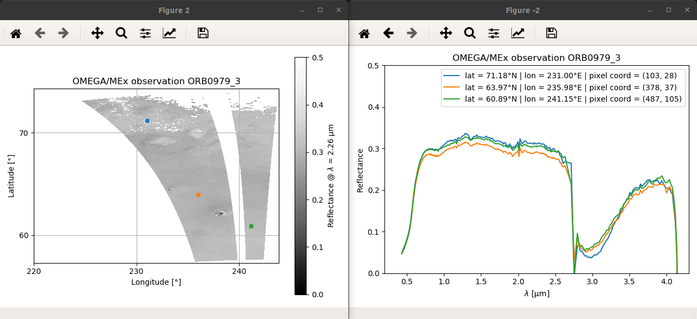
Unprojected interactive visualization
It is also possible to use a similar interactive display of an OMEGA data cube without any equatorial or polar projection, only using the (X, Y) axes of the cube with the show_omega_interactif function. In this case it uses show_omega instead of show_omega_v2 to display the OMEGA map.
Composite maps
OMEGA-Py provides functions to generate composite maps from multiple OMEGA observations, with either the reflectance or previously processed high-level maps (such as band depth). For instance, the maps in figures 3 to 5 of Stcherbinine et al. (2021)2 have been generated using OMEGA-Py functions.
For the following examples, let's assume we have loaded these 3 OMEGA observations:
omega41 = od.autoload_omega('0041_1', therm_corr=True, atm_corr=True)
omega61 = od.autoload_omega('0061_1', therm_corr=True, atm_corr=True)
omega103 = od.autoload_omega('0103_1', therm_corr=True, atm_corr=True)
Computing and displaying a composite map is done by using the
show_omega_list_v2 function.
Defining the grid
Generating composite maps requires to project all the OMEGA observations on the same longitude/latide grid, defined by the following parameters in the call of the function:
| Parameter | Decription |
|---|---|
lon_min |
Minimum longitude in degrees E (comprised between 0 and 360) |
lon_max |
Maximum longitude in degrees E (comprised between 0 and 360) |
pas_lon |
Resolution of the longidude grid in degrees (i.e., size of the pixels along the longitude axis) |
lat_min |
Minimum latitude in degrees N (comprised between -90 and 90) |
lat_max |
Maximum latitude in degrees N (comprised between -90 and 90) |
pas_lat |
Resolution of the latidude grid in degrees (i.e., size of the pixels along the latitude axis) |
Extracting the projected map
The newly created arrays containing the composite map, and the associated longitude/latitude grids
can be retrieved as an output of the show_omega_list_v2
function by adding out = True in the call.
Alternatively, they can also be saved in a specific file then loaded when you want, as described in Saving & Loading composite maps.
Reflectance
To generate a composite reflectance map, all we need to provide is:
- The list of OMEGA observations previously loaded as OMEGAdata objects.
- The grid parameters.
- The desired wavelength in μm (
lam).
Then additional optional parameters can be used to customize the displayed map (polar viewing, colormap, colorscale, title...).
op.show_omega_list_v2(
# OMEGA observations
[omega41, omega61, omega103],
# Grid parameters
lat_min=-90, lat_max=-75,
lon_min=0, lon_max=360,
pas_lon=0.1, pas_lat=0.1,
# Polar viewing
polar=True,
# Colorscale min/max
vmin=0, vmax=0.6,
# Reflectance wavelength
lam=1.085,
# Colormap
cmap='Greys_r',
)
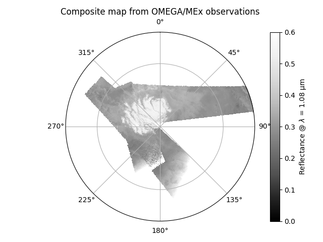
Data & Masks
Let's assume we have now also computed the corresponding masks (mask_41, mask_61, mask_103)
and 1.5μm BD maps (bd15_41, bd15_61, bd15_103).
Similarly to how it works for the show_omega_v2 function,
adding masks to hide some specific pixels of the OMEGA observations can be done simply by
passing these masks as a list to the mask_list parameter.
If using masks, then it is required that masks for all the observations present in omega_list
are given, in the same order.
Replacing the reflectance by pre-computed data maps for all OMEGA observations can be done
by passing them to the data_list argument of the function
(instead of specifying the lam argument).
Important
The data in mask_list and data_list (if used) must be in the same order as omega_list.
Otherwise, if the dimensions of the content of all lists do not match, a ValueError will be
raised.
import cmocean.cm as cmo # Some more very nice colormaps
op.show_omega_list_v2(
# OMEGA observations
[omega41, omega61, omega103],
# Grid parameters
lat_min=-90, lat_max=-75,
lon_min=0, lon_max=360,
pas_lon=0.1, pas_lat=0.1,
# Polar viewing
polar=True,
# Colorscale min/max
vmin=0, vmax=0.4,
# Colormap
cmap=cmo.ice,
# Data
data_list = [bd15_41, bd15_61, bd15_103],
# Masks
mask_list = [mask_41, mask_61, mask_103],
# Colorbar title
cb_title = r'1.5 μm BD',
)
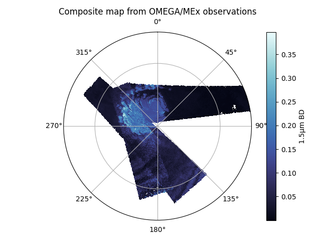
Projection methods
Since version 2.4, two projections methods are available to generate composite maps of OMEGA observations.
They can be selected by specifying proj_method=1 or proj_method=2 in the call of the
show_omega_list_v2 function
(current default is method 1).
Method 1
The fastest way to generate composite maps. It will only consider the coordinates of the center of every pixels of an observation to fill the new grid.
It works well for a grid with a coarser resolution compared to the size of the actual OMEGA pixels, but for high-resolution maps (typically with pixels smaller than 1°x1°) it may results in gaps in the newly created map.
Nicer maps with method 1
There is still a way to improve the rendering of high-resolution maps generated with
the method 1, as shown in Illustration: it is possible to hide the
small lines of NaN pixels within the map by adding contours on the edges of the plot.
This is done by setting the edgecolor parameter to 'face', and controlling the
with with lw.
Default behaviour of the function is: edgecolor='face' and lw=0.1.
Method 2
The second method allows to generate high-resolution composite maps.
Here the algorithm is going to search for every pixels of the grid that are within the OMEGA pixels footprints polygons. It fixes the issue of the gaps within the composite map that can be observed with the method 1 for high-resolution grid, but takes much more time to process.
Tip
If the generation of composite maps can take a few seconds to minutes with the method 1, it can easily be hours with method 2 for a large number of observations.
Thus, we suggest to use method 1 to preview the maps and make some test, then only use method 2 for the final processing, and save them directly (see Saving & Loading composite maps) to only have to process them once.
Displaying maps generated with method 2
For maps computed with method 2, it no longer needed to add the edges to hide the data
gaps, so the edgecolor parameter can be set to 'none'.
Illustration
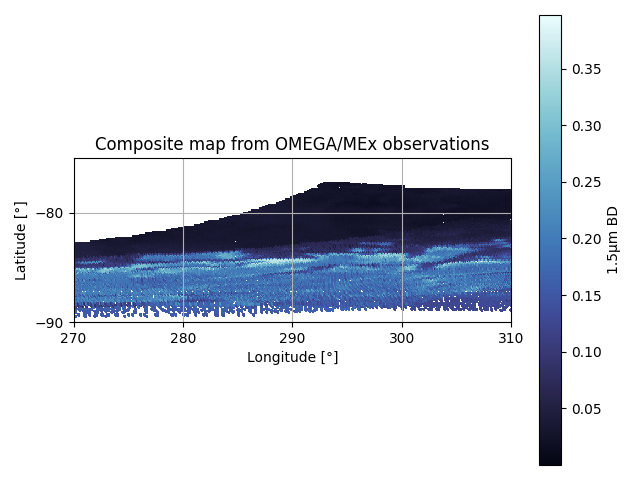
Source code
op.show_omega_list_v2(
# OMEGA observations
[omega41, omega61, omega103],
# Grid parameters
lat_min=-90, lat_max=-75,
lon_min=0, lon_max=360,
pas_lon=0.1, pas_lat=0.1,
# Polar viewing
polar=True,
# Colorscale min/max
vmin=0, vmax=0.4,
# Colormap
cmap=cmo.ice,
# Data
data_list = [bd15_41, bd15_61, bd15_103],
# Masks
mask_list = [mask_41, mask_61, mask_103],
# Colorbar title
cb_title = r'1.5 μm BD',
# Projection method & display
proj_method = 1,
edgecolor = 'face',
lw = 0.1,
)
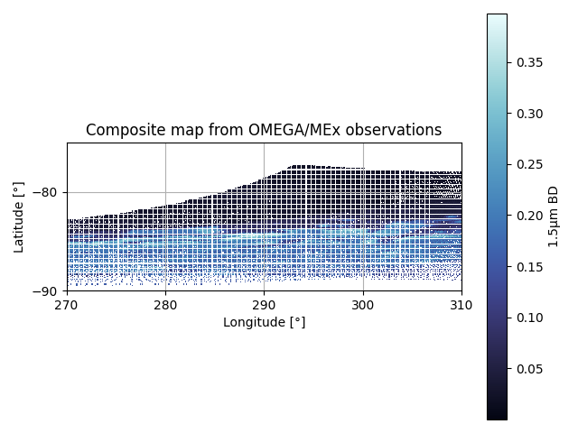
Source code
op.show_omega_list_v2(
# OMEGA observations
[omega41, omega61, omega103],
# Grid parameters
lat_min=-90, lat_max=-75,
lon_min=0, lon_max=360,
pas_lon=0.1, pas_lat=0.1,
# Polar viewing
polar=True,
# Colorscale min/max
vmin=0, vmax=0.4,
# Colormap
cmap=cmo.ice,
# Data
data_list = [bd15_41, bd15_61, bd15_103],
# Masks
mask_list = [mask_41, mask_61, mask_103],
# Colorbar title
cb_title = r'1.5 μm BD',
# Projection method & display
proj_method = 1,
edgecolor = None,
)
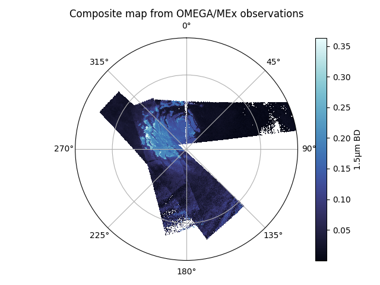 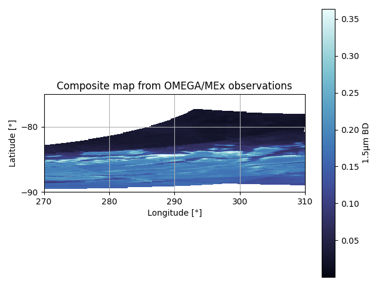
Source code
op.show_omega_list_v2(
# OMEGA observations
[omega41, omega61, omega103],
# Grid parameters
lat_min=-90, lat_max=-75,
lon_min=0, lon_max=360,
pas_lon=0.1, pas_lat=0.1,
# Polar viewing
polar=True,
# Colorscale min/max
vmin=0, vmax=0.4,
# Colormap
cmap=cmo.ice,
# Data
data_list = [bd15_41, bd15_61, bd15_103],
# Masks
mask_list = [mask_41, mask_61, mask_103],
# Colorbar title
cb_title = r'1.5 μm BD',
# Projection method & display
proj_method = 2,
edgecolor = None,
)
Saving & Loading composite maps
To avoid reprocessing every time the projection of the OMEGA observations to generate the composite maps, which may take time, especially for large datasets and/or if you are using the method 2, it is possible to export them in a single file after the processing. Then, all you have to do is to load this file and display the map as you want.
Saving composite map
Computing and saving a composite map is done by using the
save_map_omega_list function.
It is very similar to show_omega_list_v2
except that you do not need to give the parameters related to the display of the map.
Instead, you can define the path where the data will be saved, and the filename.
Good practises
If you are not using the reflectance, it is recommended to fill the data_desc
argument with a description of the data (similarly to cb_title).
This value will be used by default as the colorbar label when displaying the map,
and it is a good way to know what data are stored within the file when you load it.
Also, if you use the automatically generated filename, it is recommended to
use the ext argument to indicate the data used to generate the map, and identify them.
op.save_map_omega_list(
# OMEGA observations
omega_list,
# Grid parameters
lat_min=50, lat_max=90,
lon_min=0, lon_max=360,
pas_lat=0.1, pas_lon=0.1,
# Data
data_list=bd_19_list,
data_desc='1.9 μm BD',
# Masks
mask_list=mask_ice_list,
# Output file parameters
ext='BD_1.9microns_mask4C',
sub_folder='mask4C',
folder='../data',
)
Loading & displaying previously saved map
Once you have saved a composite map in a file with
save_map_omega_list,
you can load its content with
load_map_omega_list
and display the map with
show_omega_list_v2_man.
The function takes as argument the arrays previously loaded, and parameters to customize
the plot, similarly to show_omega_v2
or show_omega_list_v2
(colormap, colorscale, title, polar viewing...).
Colorbar title
By default, the colorbar title will used the one passed to data_desc when saving the map,
but it can be changed using the cb_title argument.
data_bd19, mask, grid_lat, grid_lon, mask_obs, infos = op.load_map_omega_list(
'../data/mask4C/res_show_omega_list_v2__lat50-90_pas0.1_lon000-360_pas0.1_BD_1.9microns_mask4C.pkl'
)
op.show_omega_list_v2_man(
data_bd19,
grid_lat,
grid_lon,
infos,
cmap = 'inferno',
vmin = 0.02,
vmax = 0.08,
title = '',
polar = True,
cb_title = 'auto',
)
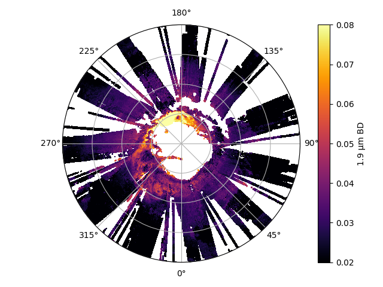
-
D. Jouglet, F. Poulet, R. E. Milliken, et al. (2007). Hydration state of the Martian surface as seen by Mars Express OMEGA : 1. Analysis of the 3 μm hydration feature. Journal of Geophysical Research: Planets, 112, E08S06. doi:10.1029/2006JE002846 ↩
-
A. Stcherbinine, M. Vincendon, F. Montmessin, P. Beck (2021). Identification of a new spectral signature at 3 µm over Martian northern high latitudes: implications for surface composition. Icarus, 369, 114627. doi:10.1016/j.icarus.2021.114627 ↩↩